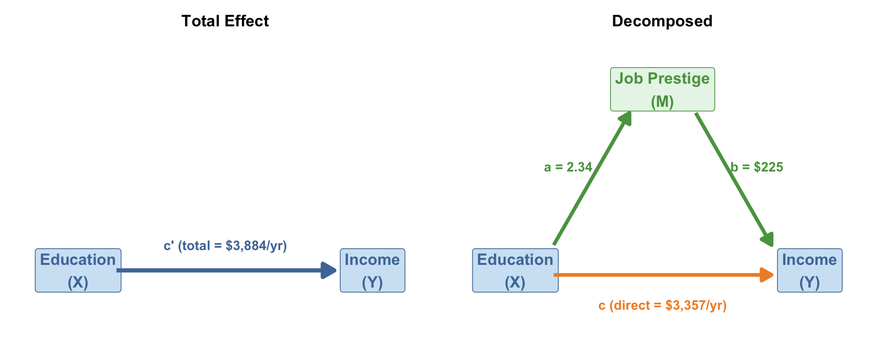
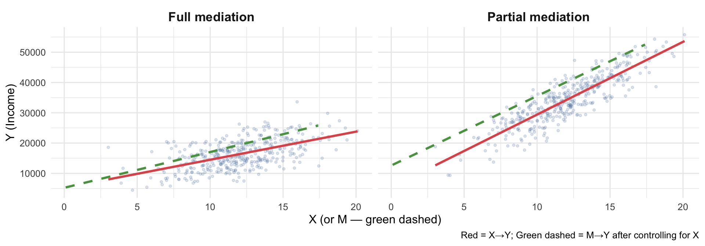
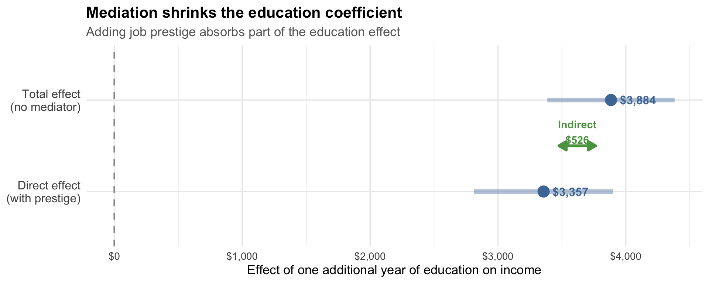
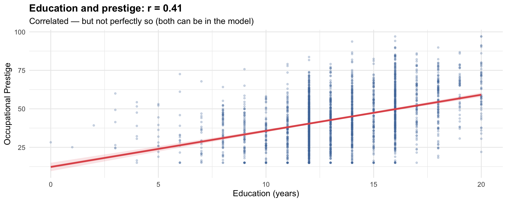
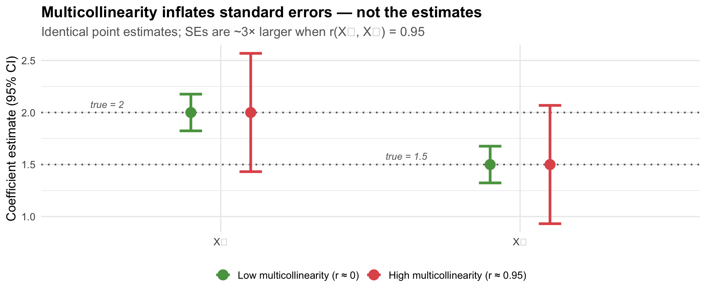
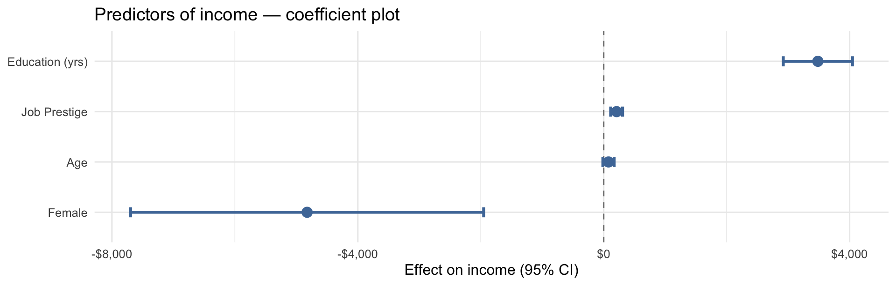

Sociology 106: Quantitative Sociological Methods
April 21, 2026
Housekeeping:
Statistical content — three parts:
In-class lab:
Weekly Assignment #11
In-class presentations
Final paper
The arc of the course: from “Is there a relationship?” to “What kind?”
Each week we’ve added a layer of nuance. This week we ask not just whether X predicts Y, but through what mechanism — and we tackle a practical issue (multicollinearity) you’ll likely encounter writing up your papers.
Moderation vs. Mediation — the distinction that trips everyone up
| Moderation | Mediation | |
|---|---|---|
| Question | For whom does X affect Y? | How/why does X affect Y? |
| Third variable | A moderator — changes the slope of X→Y | A mediator — carries the effect of X to Y |
| Path structure | X → Y, with slope depending on Z | X → M → Y |
| Regression term | Interaction: X * Z |
Sequential models: Y ~ X, then Y ~ X + M |
| What you see | Different slopes for different groups | X effect shrinks when M is added |
Mediation story:
Does education raise income because it leads to higher-prestige jobs?
\[\text{Education} \rightarrow \underbrace{\text{Job Prestige}}_{\text{mediator } M} \rightarrow \text{Income}\]
The mediator explains the mechanism.
Moderation story (Week 13):
Does education raise income more for men than for women?
\[\text{Education} \xrightarrow{\text{slope differs by}} \text{Income}\] \[\text{(depending on Sex)}\]
The moderator changes who benefits.
Memory trick
Mediation → the mechanism (Mediator = Mechanism). Moderation → the modifier (Moderator = Modifier of the slope).
Mistake 1: Controlling for a mediator
If you add job prestige as a control in a model predicting income from education, you block the very path you’re trying to study. The coefficient on education will tell you only the direct effect — missing the part that works through prestige.
→ Week 13 warned: don’t control for mediators. Today we learn what to do instead.
Mistake 2: Calling a mediator a moderator
A mediator is on the causal path. A moderator is off the path, conditioning how strong it is.
The test: where is the third variable?
Draw the arrows. If the third variable sits between X and Y (X → M → Y), it’s a mediator. If it sits beside the X→Y arrow, changing its slope, it’s a moderator.
How and why does X affect Y?

\[\underbrace{c'}_{\text{total}} = \underbrace{c}_{\text{direct}} + \underbrace{a \times b}_{\text{indirect}}\]
Does education predict job prestige?
| (1) | |
|---|---|
| (Intercept) | 12.25 |
| (1.40) | |
| Education (yrs) | 2.34 |
| (0.10) | |
| Num.Obs. | 2525 |
| R2 | 0.172 |
Each additional year of education is associated with 2.34 more prestige points.
Does prestige predict income, controlling for education?
| (1) | |
|---|---|
| (Intercept) | -12704 |
| (3501) | |
| Education (yrs) | 3357 |
| (278) | |
| Job Prestige | 225 |
| (49) | |
| Num.Obs. | 2525 |
| R2 | 0.092 |
Putting it together
A year of education raises prestige by 2.34 points; each prestige point raises income by $225. So about 14% of the education effect on income runs through job prestige.
Why not just subtract?
You can estimate the indirect effect as c’ − c, but the a × b product gives you the same number and generalizes better (especially with bootstrapped confidence intervals).

Full mediation
The direct effect c drops to (near) zero when M enters the model.
M fully explains why X affects Y.
The indirect path is the whole story.
Partial mediation
The direct effect c decreases but remains significant.
M explains part of the mechanism; something else also connects X directly to Y.
Both paths matter.
In practice: partial mediation is the norm
Full mediation is rare in observational social science. Expect the direct effect to shrink — but not disappear. That’s still an important substantive finding.
The Baron & Kenny (1986) approach tests mediation through four sequential regressions:
| Step | Model | What you’re checking |
|---|---|---|
| 1 | lm(Y ~ X) |
X significantly predicts Y (there’s something to explain) |
| 2 | lm(M ~ X) |
X significantly predicts M (X moves the mediator) |
| 3 | lm(Y ~ X + M) |
M significantly predicts Y, controlling for X |
| 4 | Compare Step 1 vs. Step 3 | X→Y coefficient decreases when M is added |
The logic
If X moves M (Step 2), and M moves Y independently of X (Step 3), then some of what looks like a direct X→Y effect is really X working through M. Step 4 quantifies how much.
# Step 1: Does education predict income?
step1 <- lm(income91 ~ educ, data = attain_med)
# Step 2: Does education predict prestige?
step2 <- lm(prestg80 ~ educ, data = attain_med)
# Step 3 & 4: Does prestige predict income? Does education effect shrink?
step3 <- lm(income91 ~ educ + prestg80, data = attain_med)| Step 1: Y~X | Step 2: M~X | Step 3: Y~X+M | |
|---|---|---|---|
| + p < 0.1, * p < 0.05, ** p < 0.01, *** p < 0.001 | |||
| (Intercept) | -9947** | 12*** | -12704*** |
| (3463) | (1) | (3501) | |
| Education (X) | 3884*** | 2*** | 3357*** |
| (254) | (0) | (278) | |
| Job Prestige (M) | 225*** | ||
| (49) | |||
| Num.Obs. | 2525 | 2525 | 2525 |
| R2 | 0.085 | 0.172 | 0.092 |
What the table shows:
Verdict: partial mediation
Education still has a direct effect on income, but part of its total effect works through occupational prestige. Both the direct and indirect paths matter.
Baron & Kenny tells you whether mediation exists, but not how much or how confident you should be in the indirect effect.
The indirect effect (a × b) needs its own standard error and confidence interval — and the distribution of a product of two estimates is not normal, so we can’t use a simple z-test.
Solution: bootstrapping (re-sample the data many times, compute a × b each time, use the percentiles as the CI).
Modern practice
The mediation package in R implements bootstrapped confidence intervals for the indirect effect (ACME = Average Causal Mediation Effect). This is the standard in published sociology papers.
mediationlibrary(mediation)
# Fit the two models first
model_m <- lm(prestg80 ~ educ, data = attain_med)
model_y <- lm(income91 ~ educ + prestg80, data = attain_med)
# Run mediation with bootstrap
med_out <- mediate(
model.m = model_m,
model.y = model_y,
treat = "educ", # X variable
mediator = "prestg80", # M variable
boot = TRUE,
sims = 1000 # bootstrap draws
)
summary(med_out)Reading the output
Our results (500 bootstraps):
| Effect | Estimate | 95% CI |
|---|---|---|
| Indirect (ACME) | $527 | [$329, $747] |
| Direct (ADE) | $3,357 | — |
| Total | $3,884 | — |
| % Mediated | 14% | — |
Interpretation
About 14% of education’s effect on income is mediated by occupational prestige. The indirect path (education → prestige → income) is statistically distinguishable from zero (the CI excludes 0). But a substantial direct effect remains.

Mediation analysis tests a causal claim — that X works through M — but with observational data, we can never fully prove it.
Three threats to causal mediation:
| Threat | What it means |
|---|---|
| No temporal ordering | We assume X precedes M precedes Y. With cross-sectional data, we can’t verify this. |
| M→Y confounding | A third variable may cause both prestige and income, creating a spurious M→Y association. |
| X→M→Y vs X←M→Y | Without experiments, the arrow could point the other way (prestige affects education attainment). |
The gold standard
The cleanest mediation evidence comes from randomized experiments where X is randomly assigned. Then you know X precedes M, and there’s no X-confounder. But experiments are rare in sociology — so we work with what we have, acknowledge the limits, and make the theoretical argument carefully.
If you’re running a mediation analysis:
mediate() with boot = TRUE for the indirect effect CILanguage template:
“Consistent with a mediation hypothesis, the coefficient on [X] declined from [total] to [direct] when [M] was included (ACME = [value], 95% CI [lo, hi]). This suggests that approximately [%] of the association between [X] and [Y] may operate through [M], though cross-sectional data preclude strong causal claims about the mediating mechanism.”
If you wanted stronger causal mediation evidence with observational data, you would:
medsens() in the mediation package) to test how robust the indirect effect is to unmeasured M→Y confoundingFor this course
For your final papers: fit the three models, bootstrap the indirect effect, state the caveats. That’s the sociological standard for cross-sectional mediation claims.
When your predictors are too alike
Multicollinearity occurs when two or more predictors in a regression are highly correlated with each other.
Why it’s a problem:
When X₁ and X₂ are highly correlated: - The model can’t tell which one is doing the work - Coefficient estimates become unstable — tiny data changes → large coefficient changes - Standard errors inflate → wide confidence intervals → everything looks non-significant - Coefficients can flip sign or become implausibly large
The core issue
Multicollinearity doesn’t bias your coefficients — it just makes them imprecise. With enough data, standard errors shrink. But in typical survey samples, high multicollinearity can completely obscure real effects.

The Variance Inflation Factor (VIF) measures how much each predictor’s variance is inflated by correlation with the others.
\[\text{VIF}_j = \frac{1}{1 - R^2_j}\]
where \(R^2_j\) is the R² from regressing predictor \(j\) on all other predictors.
Rules of thumb:
| VIF | Interpretation |
|---|---|
| 1 | No multicollinearity |
| 1–5 | Low — acceptable |
| 5–10 | Moderate — investigate |
| > 10 | Severe — take action |

The takeaway
The point estimates are approximately the same in both conditions — multicollinearity does not bias coefficients. What it does is inflate the standard errors: the confidence intervals are much wider when x₁ and x₂ are highly correlated. You’re more likely to miss a real effect (Type II error), but the estimates themselves are not systematically wrong.
It depends on what you’re trying to do — and which variables are collinear.
| Goal | Does multicollinearity matter? |
|---|---|
| Prediction | Usually no — collinear models predict just as well; R² is unaffected |
| Inference on a control variable | Often no — imprecise control coefficients don’t invalidate your key result |
| Inference on your variable of interest | Yes — if your key X is the collinear one, SEs inflate and you may miss a real effect |
| Understanding relative importance of two predictors | Yes — you can’t disentangle their individual contributions |
The core issue: precision, not accuracy
Multicollinearity does not bias your coefficients — the estimates are still correct on average. What it does is make them imprecise: standard errors inflate, confidence intervals widen, and t-statistics shrink. The main consequence is more Type II errors — failing to detect real effects that are actually there.
Type II error = failing to reject H₀ when it’s actually false (a “false negative”).
Here’s the chain of consequences:
\[\underbrace{\text{High multicollinearity}}_{\text{predictors too similar}} \Rightarrow \underbrace{\uparrow \text{SE}}_{\text{wider uncertainty}} \Rightarrow \underbrace{\downarrow t\text{-statistic}}_{\frac{\hat\beta}{SE}} \Rightarrow \underbrace{\uparrow p\text{-value}}_{\text{harder to reject }H_0} \Rightarrow \underbrace{\text{Type II error}}_{\text{miss a real effect}}\]
Example:
Suppose education truly does affect income controlling for prestige (direct effect = $800/year). With low multicollinearity between educ and prestige, SE = 200, t = 4.0, p < 0.001. With high multicollinearity (r = 0.92), SE = 1100, t = 0.73, p = 0.47 — we’d conclude “no direct effect” even though one exists.
The effect is real. The data just can’t tell the two predictors apart.
The practical implication
If you run a multivariate model and a variable you expected to be significant is not — and its VIF is high — consider whether multicollinearity is masking the effect. This is not grounds to drop the variable; it’s grounds to note the limitation.
Multicollinearity is not just about two variables being correlated. Any set of predictors can jointly cause it, even if no two are highly correlated in isolation.
Example 1: Age, work experience, and tenure
No single pairwise correlation screams “problem,” but the three together are nearly redundant.
Example 2: Education, degree, and test score
→ This is why you check VIF on the fitted model, not just pairwise correlations.
The best news: collinear controls often don’t threaten your main conclusion.
If your research question is “Does education affect income?” and education has a low VIF, then:
The collinear controls (say, age and experience) just have imprecise coefficients — but you probably don’t care about their individual effects.
Example from our data:
educ prestg80 age
1.291837 1.228938 1.069693 If educ has VIF ≈ 2 but prestg80 and age have VIF ≈ 4, that’s fine — our inference about education is unaffected.
Rule of thumb for your papers
Check VIF on all predictors. If the variable of interest has low VIF (< 5), report it and move on. If only controls have elevated VIF, note it briefly but don’t panic — your main finding is still valid.
Step 1: Check the correlation matrix
educ prestg80 age
educ 1.00 0.42 -0.22
prestg80 0.42 1.00 0.02
age -0.22 0.02 1.00Step 2: Check VIF after fitting the model
educ prestg80 age
1.291837 1.228938 1.069693 If VIF < 5 for all predictors → you’re fine. Continue.
| Problem | Solution |
|---|---|
| Including education and degree (two measures of same concept) | Drop one; keep the theoretically central one |
| Including age and birth year | These are perfectly collinear — pick one |
| Two highly correlated controls | Drop the one less theoretically important |
| Several items measuring the same underlying concept | Combine into an index (average or sum the items) |
| Conceptually distinct variables that happen to correlate | Keep both, note the limitation, get more data |
Creating an index when variables measure the same concept:
When several correlated predictors tap the same underlying idea (e.g., multiple survey items about socioeconomic status, or hours worked across multiple jobs), collapsing them into a single composite reduces multicollinearity and often improves interpretability.
# Example: respondent works multiple jobs — combine total hours
attain <- attain |>
mutate(hrs_total = rowMeans(dplyr::select(., hrs1, hrs2), na.rm = TRUE))
# Example: standardise and average two SES-related items into one index
attain <- attain |>
mutate(
educ_z = scale(educ),
prestg_z = scale(prestg80),
ses_index = (educ_z + prestg_z) / 2 # simple equal-weight composite
)Index variables also carry a substantive interpretation: you’re saying these items measure one construct, not two separate concepts. Make that theoretical argument in your paper.
What NOT to do
Don’t use regularization (ridge/LASSO) without understanding it. Don’t drop variables that are theoretically important just because of high VIF. Report the issue and argue for your choice.
Common multicollinearity problems in student papers:
Getting your final paper across the finish line
Required components:
| Component | What to include |
|---|---|
| Bivariate model | lm(Y ~ X) — your key IV predicting Y |
| Multivariate model | Add at least 2 controls; discuss why they matter |
| Extension | At least one of: interaction, mediation, or logistic (if binary Y) |
| Assumption check | Residual plot + VIF — a paragraph is sufficient |
| Model table | modelsummary() comparing models side-by-side |
Don’t just report the number — tell the story:
| Instead of… | Try… |
|---|---|
| “The coefficient on education is 1847.” | “Each additional year of education is associated with $1,847 higher income, holding sex and age constant.” |
| “The interaction term is significant.” | “The education–income association is steeper for men than women: each year of education yields approximately $[gap] more income for men.” |
| “ACME = 624, p < 0.05.” | “About [%]% of education’s effect on income appears to operate through occupational prestige.” |
Lead with substance
Sociological audiences want to know: what does this mean for inequality / stratification / the social world? Start with the finding, then give the number.
Every quantitative paper needs a limitations section. Be specific, not generic.
Generic (avoid): > “This study has some limitations. The data may not be perfectly representative.”
Specific (better): > “Because the GSS uses cross-sectional data, we cannot establish the temporal ordering required for causal inference. Specifically, the mediation claim — that education affects income through occupational prestige — requires that education precede prestige, which we assume but cannot verify. Additionally, unmeasured confounders of the prestige–income relationship (e.g., parental occupational networks) may bias the indirect effect estimate.”
The goal of limitations
Not to undermine your argument — but to show the reader you understand the boundaries of your evidence. A specific limitation paragraph signals methodological maturity.
A coefficient plot shows each predictor’s estimated effect and its confidence interval as a dot-and-whisker. It lets readers immediately see which effects are large, which are small, and which cross zero (non-significant).
Use a coefficient plot in your presentation instead of the full regression table — tables are hard to read aloud. Use the table in your paper.
library(broom)
model_coefplot <- lm(income91 ~ educ + prestg80 + sex_f + age,
data = attain_med)
tidy(model_coefplot, conf.int = TRUE) |>
filter(term != "(Intercept)") |>
mutate(term = case_match(term,
"educ" ~ "Education (yrs)",
"prestg80" ~ "Job Prestige",
"sex_ffemale" ~ "Female",
"age" ~ "Age"
)) |>
ggplot(aes(x = estimate, y = fct_reorder(term, estimate))) +
geom_vline(xintercept = 0, linetype = "dashed", color = "gray50") +
geom_errorbarh(aes(xmin = conf.low, xmax = conf.high),
height = 0.2, linewidth = 1.1, color = "#4E79A7") +
geom_point(size = 3.5, color = "#4E79A7") +
scale_x_continuous(labels = scales::dollar_format()) +
labs(x = "Effect on income (95% CI)", y = NULL,
title = "Predictors of income — coefficient plot") +
theme_minimal(base_size = 12)
Reading the plot
A dot to the right of zero means a positive effect; left means negative. If the whisker (CI) crosses the dashed line at zero, the effect is not statistically significant at the 5% level. The distance from zero shows effect size; the width of the whisker shows precision.
Mediation
mediation::mediate() for bootstrapped CIsMulticollinearity
car::vif(): VIF > 5 warrants attention, > 10 is severeFinal paper
modelsummary() with vcov = "HC1" (robust SEs) throughoutMediation is how sociology asks mechanism questions:
These aren’t just statistical questions — they’re questions about how social structures reproduce themselves. Knowing the mechanism tells us where to intervene.
The big picture
This course has moved from “is there a relationship?” (correlations, chi-squared) → “how strong is it?” (OLS) → “is it real?” (controls, confounding) → “for whom?” (interactions) → “how does it work?” (mediation). That’s the arc of causal thinking in social science.
HW #11 — Due Thursday, April 24
Final Paper — Due Monday, May 5
Final paper components
modelsummary() with robust SEsIn-class presentations — Monday, April 28
Today: Mediation analysis on your own data
Work through the following steps:
Step 1: Identify your mediation hypothesis
Step 2: Fit the three Baron & Kenny models
Step 3: Bootstrap the indirect effect